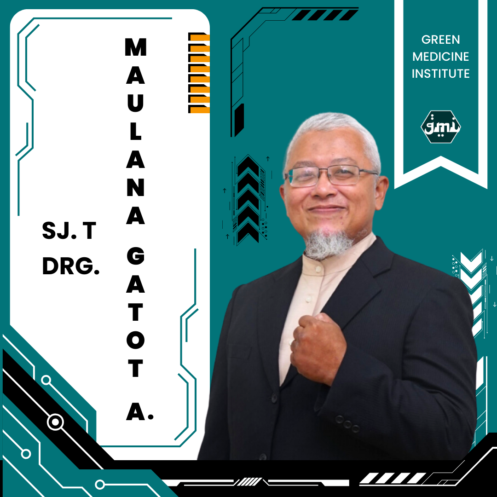

Akademi Sujok Healing
Founder Sujok Internasional
Prof. Park Jae Woo
Lahir pada 12 Maret 1942 di Korea Selatan, ia meninggal pada 25 Maret 2010 di Moskow. Beliau lulus dari Universitas Nasional Seoul pada tahun 1964. Pada tahun tahun berikutnya ia bertugas di banyak kepustakaan lokal dan internasional terkait dengan penelitian medisnya penyembuhan.
Dia adalah pendiri dan presiden banyak asosiasi Sujok:
- Institut Akupunktur Sujok Korea
- Asosiasi Terapi Sujok Internasional
- Akademi Sujok Moskow
- Dana Publik ONNURI
- Pusat Sujok Siprus
- Pengurus Tingkat Omurri, Almaty, Kazakhstan
- Presiden Kehormatan Sujok Academy India, di Chennai.
- Dia adalah perwakilan dari Perusahaan Penerbitan O Haeng dan penerbit jurnal The World of Hand and Foot.
Pelajari Seni Penyembuhan Sujok Terapi Alami untuk Kesehatan
SUJOK
Kata "Su" berarti "tangan," dan "Jok" berarti "kaki" dalam bahasa Korea. Terapi ini menggunakan prinsip bahwa tangan dan kaki adalah mikrokosmos tubuh manusia. Jadi, dengan merasakan atau merangsang titik-titik tertentu pada tangan dan kaki, kita bisa membantu mengatasi berbagai masalah kesehatan di bagian tubuh yang sesuai.
Sujok dianggap efektif karena menggunakan teknik sederhana seperti pijatan, penekanan dengan jari, penggunaan biji-bijian, magnet, atau obat tradisional untuk merangsang titik-titik tersebut. Terapi ini sering digunakan untuk mengatasi mengurangi nyeri, meningkatkan energi, dan memperbaiki keseimbangan tubuh secara keseluruhan.
TRAINER SUJOK CLASS
Ini Yang Akan Dipelajari

Basic | 5 Pillars

Main Standard Correspondence
Insect System Correspondence

Animal Head

Studi Kasus